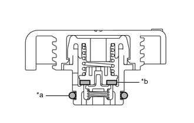
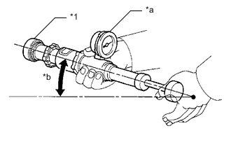
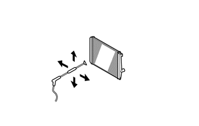

RADIATOR ON-VEHICLE INSPECTION
CAUTION / NOTICE / HINT
CAUTION:
Do not remove the reserve tank cap, air release valve or radiator drain cock plug while the engine and radiator assembly are still hot. Pressurized, hot engine coolant and steam may be released and cause serious burns.

PROCEDURE
-
INSPECT RESERVE TANK CAP (for Engine)
CAUTION:
Do not remove the reserve tank cap, air release valve or radiator drain cock plug while the engine and radiator assembly are still hot. Pressurized, hot engine coolant and steam may be released and cause serious burns.
-

*a O-ring *b Rubber Packing Measure the valve opening pressure.
-
If there are water stains or foreign matter on the O-ring, clean it with water and finger scouring.
-
Check that the O-ring is not deformed, cracked or swollen.
-
Apply engine coolant to the O-ring and rubber packing before using a radiator cap tester.
-

*1 Reserve Tank Cap *a Radiator Cap Tester *b 30° or more When using the radiator cap tester, tilt it upwards 30° or more.
-
Pump the radiator cap tester several times, and check the maximum pressure.
Pump Speed 1 pump per second Tech Tips
Even if the reserve tank cap cannot maintain the maximum pressure, it is not a defect.
Result Item Specified Condition Standard pressure
(for brand-new reserve tank cap)
94 to 122 kPa (1.0 to 1.2 kgf/cm2, 13.5 to 17 psi)
Minimum pressure
(for used reserve tank cap)
79 kPa (0.8 kgf/cm2, 11.4 psi)
If the maximum pressure is less than the minimum pressure, replace the reserve tank cap.
-
-
-
INSPECT FINS FOR BLOCKAGE

-
If the fins are clogged, wash them with water or a steam cleaner and dry them with compressed air.
Note
-
To avoid damaging the fins, keep the tip of the nozzle at right angles to the core surface.
-
If the nozzle of the steam cleaner is too close to the core, there is a possibility of damaging the fins. Always maintain the following distances from the core when using a steam cleaner.
Standard Steam Cleaner Nozzle Distance Steam Pressure Specified Condition 2942 to 4903 kPa (30.0 to 50.0 kgf/cm2, 427 to 711 psi)
300 mm (11.8 in.) 4903 to 7845 kPa (50.0 to 80.0 kgf/cm2, 711 to 1138 psi)
500 mm (19.7 in.) -
If the fins are bent, straighten them with a screwdriver or pliers.
-
Do not expose electronic components to water.
-
-